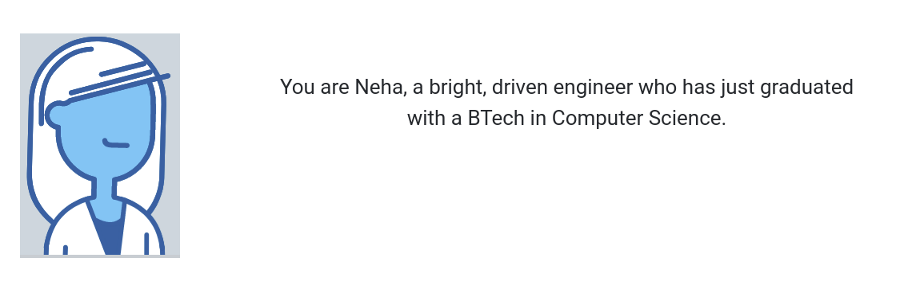

(This is same as the slide you have created. No change. Just skip the initiation presentation slide before this)
(This is same as the slide you have created. Some change in text )
You have been placed in Veritas Technologies, a software startup. Go to the next slide to see what it's like on your first day on the job.
Video appears here
The end of the video will contain an instruction to click next to proceed. This will then take the learner directly to your dashboard.
(I've linked it to the codepen dashboard though